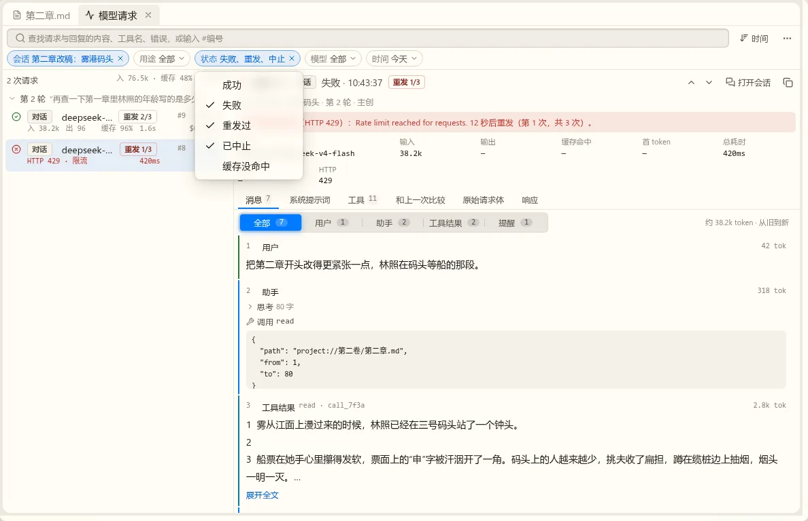
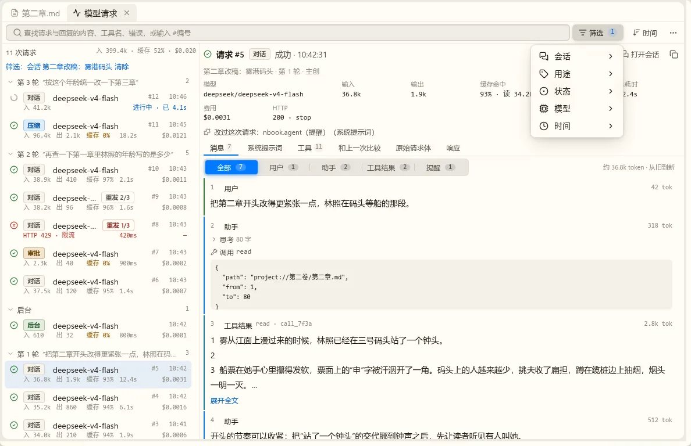
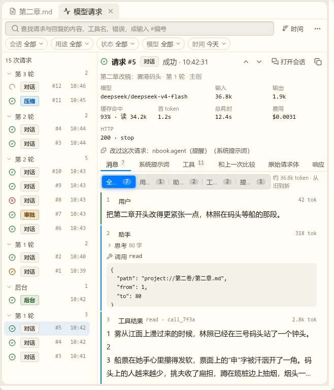
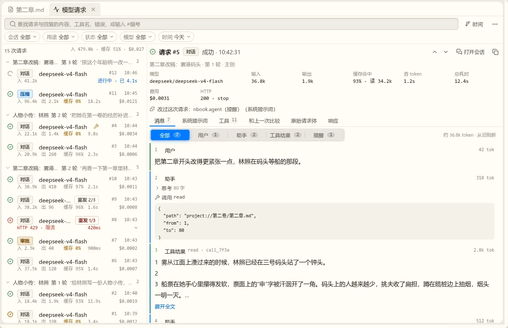
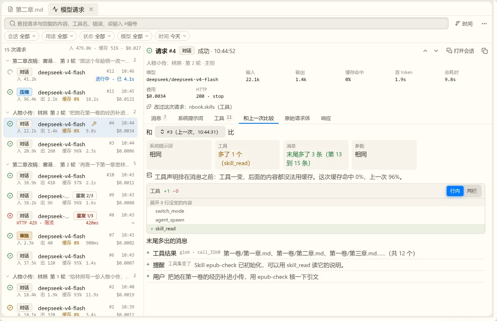
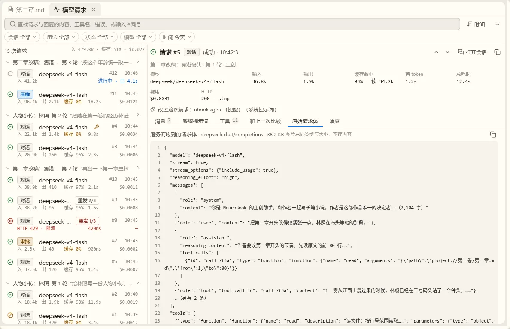
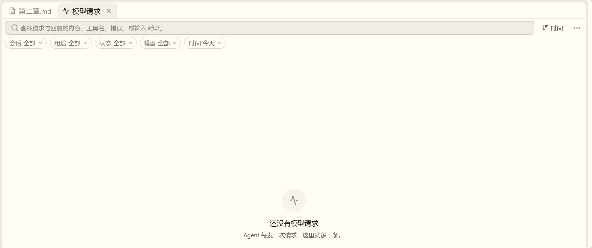

t30 模型请求：第 1 轮
筛选条件常驻一行，还是收进“筛选”按钮？
推荐 A 常驻一行：查找是这一页的主要用途，选了什么一眼看见、点 × 就清；编辑区最窄时这一行也放得下（见下一题）。
A 常驻一行

每个条件一个下拉。“缓存没命中”“重发过”在状态里。
B 收进“筛选”按钮

同会话面板的做法：按钮上写选了几项，列表上方一行写选了什么。
编辑区窄的时候，列表和详情怎么排？
推荐 A 来回切换：默认布局（1440 宽、两边侧栏都开）下编辑区只有约 650px，左右分开后详情不到 450px，消息和六页都挤；切换后两边都是整宽。
A 来回切换


点一条进详情；详情里上下箭头换请求，不用回列表。宽了自动变回左右分开。
B 列表收成紧凑行

列表一直在，但模型、token、费用和会话名都看不到，轮次标题会重名。
整页照这一稿做？
推荐照做：按已定的注意力排序画的，查找做成了全文查找。要改的写在备注里。
整页：全部会话，选中一次对话请求

- 组头写会话、第几轮和那一轮用户说的话：记得自己问过什么，就能找到那几次请求。会话标题这类后台请求单独一组。
- 每条第一行：状态、用途、模型、序号、时间；重发的标“重发 1/3”，工具集变了的标一个扳手。第二行：输入、输出、缓存命中、耗时、费用，各条对齐成列。没命中缓存的标黄。
- 新 发出去还没回来的请求也列着，转圈、写已经等了多久。
- 详情的概览：模型、输入、输出、缓存命中（读了多少）、首 token、总耗时、费用、HTTP 与停止原因；改过这次请求的扩展单写一行。右上是新一次 / 旧一次、打开会话、复制请求。
- 消息页：按角色看（用户、助手、工具结果、提醒）；长文字只露 4 行，思考收起，工具调用的参数露 5 行。新 这次请求的回复放在最后一条，所以记录要连回复一起存（旧应用只存请求）。
查找“年龄”

- 全文查找：请求与回复的正文、工具名与参数、错误文字都查。输入
#12直接跳到那次请求。 - 列表第二行换成命中的片段：在哪一条、前后的字、这次请求里还有几处。
- 详情上方一条查找条：第几处、共几处，上下跳；各页命中几处，点了跳过去。消息页多一个“有命中”，只看有命中的消息（带原来的序号）。
- 右上的排序：时间、耗时、输入 token、费用，找最慢、最贵的那次。
和上一次比较：工具集变了，缓存断开

- 四格摘要说哪里变了，一句话说缓存为什么没命中；下面是变了的那块的差异与末尾多出的消息。
- 缺省和同一会话的前一次比，可以换成别的一次。
原始请求体

- 服务商收到的请求体原样显示；图片只记类型与大小。“响应”页同样的样子，写状态、响应头（去掉密钥与 cookie）、用量与耗时。
还没有请求

已定
- 编辑区的一页；从命令面板“查看模型请求”、对话顶栏菜单（只看本会话）、回复上的“查看这次请求”打开（决定 3）
- 列表每条两行，按会话的轮次分组，看全部会话时组头写会话标题（决定 4）
- 概览在详情顶部常驻；下面依次是消息（缺省）、系统提示词、工具、和上一次比较、原始请求体、响应；思考与工具定义缺省收起，长文字只露前几行（决定 5、6）
- 开着时新请求自动进列表顶部，不改当前选中（决定 7）
- 查找要做好（决定 8）：做成全文查找，见上
- 组件放进 nb-agent-ui（决定 2）